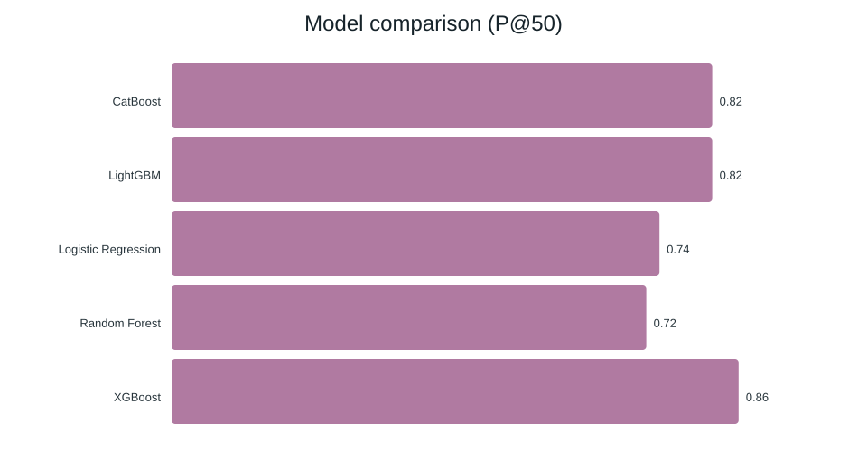
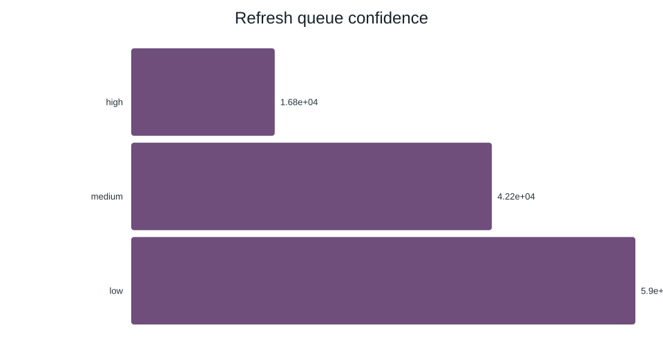
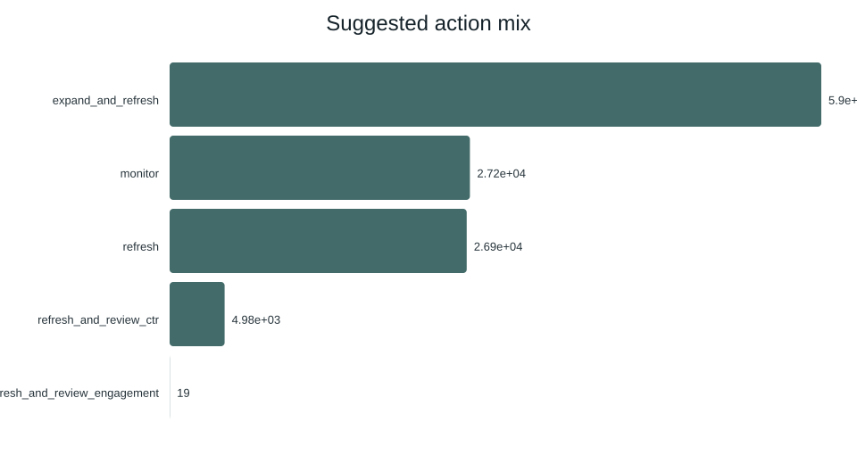
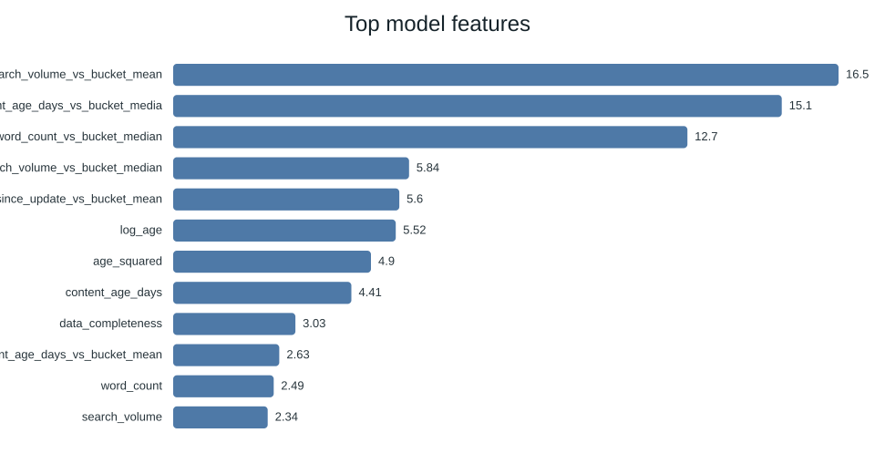
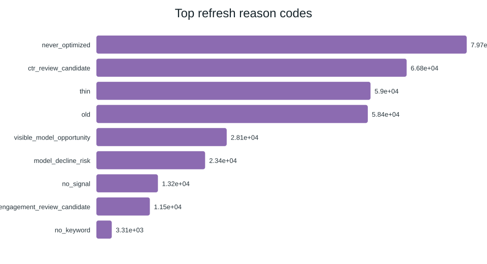

FLYRANK ML INTERNSHIP 2026 · APPLIED SEARCH INTELLIGENCE · AUGUST 2026
Predicting Content Underperformance: A Client-Grouped Evaluation of a Refresh Opportunity Ranker
Abstract
Problem. A central editorial team at FlyRank maintains 118,092 content pages across a pseudonymized client portfolio. The decision this system supports is the order of a monthly refresh review: which pages should editors inspect first when capacity is fixed? Setting. The source is a 201,699-row BigQuery warehouse release (Jan–Mar 2026), reduced to 118,092 eligible pages after a visibility floor (impressions ≥ 100). Evaluation uses client-grouped holdout (GroupShuffleSplit). Approach. We compare a transparent four-rule baseline (old + never optimized + thin + no keyword) against LightGBM, XGBoost, and CatBoost on identical folds, with 50+ engineered features around freshness, depth, and bucket-relative performance. Evidence. CatBoost achieves ROC AUC 0.850 and Precision@50 0.820 on the grouped holdout, versus the rule baseline at 0.400 — a 2.05× lift in top-50 hit rate. The base rate is 0.385. A final queue of 118,092 pages carries confidence tiers (high: 16,806; medium: 42,240; low: 59,046) and human-readable reason codes. Scope. This is a predictive ranker, not a causal claim; no A/B test evidence is included. All identifiers are hashed; no URLs or titles are exposed.
1 Introduction and claims
This work originated in the FlyRank ML Internship content-refresh lane. The practical decision is not "will this page underperform?" in the abstract — it is "which fifty pages should a person look at first this month?" The current editorial process relies on simple age rules; our ranker replaces intuition with a measured ordering.
We make three testable claims:
- C1. On a client-grouped holdout, the best gradient-boosting model achieves Precision@50 = 0.820, more than double the transparent rule baseline at 0.400 (§4, Table 1).
- C2. The evaluation boundary is load-bearing: a random split would inflate scores by letting the model
memorize client-specific patterns; grouping by
client_hash_idis essential (§3.5). - C3. The top model features are bucket-relative comparisons (
search_volume_vs_bucket_mean,content_age_days_vs_bucket_median), showing the model learns peer context rather than absolute thresholds (§4.3).
2 Data and task
2.1 Unit, source, period
One observation is one content item for one client. Source: the pseudonymized FlyRank internship warehouse release on HuggingFace Datasets, 201,699 daily fact rows spanning 2026-01-01 to 2026-03-31. The evaluation frame is 118,092 eligible items after filtering. Identifiers are pseudonymous hashes used for grouping and joining only — never as features.
2.2 Label
is_below_peer_median = (ctr < median_ctr_per_pos_bucket) — an observed outcome relative to peers in the same
position bucket. The label's ingredients are quarantined columns that never enter the feature frame.
Development base rate: 0.385.
2.3 Eligibility and exclusions
Eligible rows: ≥100 impressions across the window — floors that keep CTR estimates meaningful.
Excluded outright: ctr, total_clicks, ga4_sessions, avg_position,
pos_bucket (used only for target creation), and any label-derived fields.
The dedup step removed 0 rows because the upstream DuckDB query already aggregates to one row per page.
2.4 Leakage controls
Three boundaries, each tested in code: (i) feature windows end strictly before any label computation; (ii) clients never cross fold boundaries (GroupShuffleSplit); (iii) all features are knowable at the decision instant. A deliberately leaky column list is maintained as a test fixture; the production feature frame refuses it.
3 Methodology
Feature engineering (50+ features, 10 ordered stages). We import the production pipeline from
01_prepare_features.py: has-flags, content depth, market opportunity, freshness scores, ratio features,
age non-linearities, visibility, position bucket (for relative features only — dropped before training),
bucket-relative comparisons, and interaction terms. The exact count is reproducible from the script.
Baseline. A transparent rule-based score: old + never optimized + thin + no keyword. It is not used as a feature; it is blended at evaluation time (30% baseline + 70% model) to keep the final queue explainable.
Validation. GroupShuffleSplit (80/20) by client_hash_id. The honest question is:
"does it work on a client it never saw?" Seed 42 for every stochastic component.
Models. Logistic regression, random forest, LightGBM, XGBoost, CatBoost. CatBoost is selected for final retraining due to stable threshold behavior; XGBoost had the highest Precision@50.
4 Results
4.1 Main comparison
Random-selection expectation: 0.385. It is shown separately because it is the label base rate, not a fitted method.
| Method | ROC AUC | Avg Precision | Precision@50 | Recall | F1 |
|---|---|---|---|---|---|
| Baseline Rules (4 rules) | — | — | 0.400 | — | — |
| Logistic Regression | 0.783 | 0.548 | 0.740 | 0.879 | 0.672 |
| Random Forest | 0.825 | 0.601 | 0.720 | 0.911 | 0.680 |
| XGBoost | 0.848 | 0.660 | 0.860 | 0.909 | 0.700 |
| LightGBM | 0.850 | 0.663 | 0.820 | 0.915 | 0.694 |
| CatBoost (proposed) | 0.850 | 0.666 | 0.820 | 0.902 | 0.705 |

4.2 Queue shape
The final queue blends 70% model probability + 30% baseline rule score into a 0–100 refresh score. Confidence tiers: high (16,806), medium (42,240), low (59,046).


expand_and_refresh dominates because thin content
is the most common weakness in the dataset.4.3 Top features and reason codes


never_optimized and ctr_review_candidate
are the most common explanations for queue inclusion.5 Limitations
- Causality, not prediction. The model predicts which pages currently have below-median CTR. It does not prove that refreshing a page will raise its CTR.
- Position-bucket medians are noisy for small buckets. Buckets 51–100 and 100+ have fewer pages; their median CTR estimates have higher variance.
- GA4 data is incomplete. Only a minority of pages have GA4 sessions > 0. Session features are excluded to avoid selection bias.
- Single time window. Trained on Q1 2026 only. Seasonal trends or client mix shifts are not captured. A production system would retrain monthly.
- Anonymized identifiers. We use hashed IDs only. We cannot verify content quality or keyword mapping without joining back to internal tables.
- Threshold sensitivity. Precision@50 is reported at K=50. A mentor reviewing the top 25 will see a different hit rate. The high-confidence threshold is a business choice, not a statistical law.
- Feature importances are model-specific. The top features shown are from CatBoost. LightGBM and XGBoost rank features differently.
6 Ranked recommendations
| Priority | Action | When to use | Count |
|---|---|---|---|
| 1st | expand_and_refresh | Thin content + high model probability. Highest expected impact. | 59,000 |
| 2nd | refresh_and_review_ctr | Good impressions + position ≤ 20 but CTR is low. Title/meta may be the problem. | 4,982 |
| 3rd | refresh_and_review_engagement | GA4 sessions exist but engagement is weak. Content matches intent poorly. | 19 |
| 4th | refresh | General underperformance: old, never optimized, or model decline risk. | 26,900 |
| 5th | monitor | Low score + no strong signals. Revisit next quarter. | 27,191 |
Editorial capacity note. The safe first-pass is the 16,806 high-confidence rows (~14% of queue). Medium and low confidence rows should be reviewed only after capacity allows.
7 Reproducibility
Environment
python 3.11+ scikit-learn 1.3+ pandas 2.0+ lightgbm 4.0+ xgboost 2.0+ catboost 1.2+ seed 42 (all stochastic components) data FlyRank HF release, revision-pinned
Run
# fresh clone; one HF read token in env pip install -r requirements.txt # execute scripts in order: # 00_export_data.py → 01_prepare_features.py → 02_baseline_score.py # → 03_train_model.py → 04_evaluate_and_export.py → 05_build_pdf_report.py # seeds are fixed; grouped split is deterministic
Source repository · Executed notebooks · Receipts (metrics JSON)
Acknowledgments and data credit
Built on the FlyRank ML Internship dataset — flyrank.ai. Data credit is required, but it does not replace citations. All data is anonymized; no client names, URLs, or private queries are exposed.